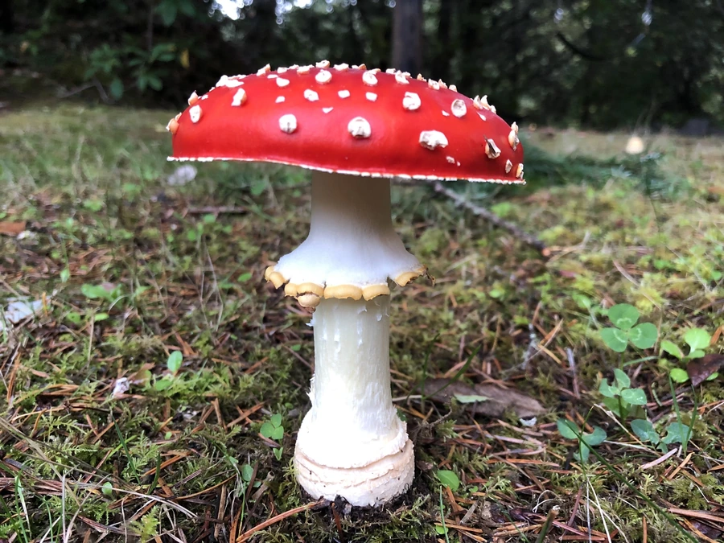

真菌 · 真菌界
毒蝇伞 Amanita muscaria

毒蝇伞菌盖鲜红并缀有白色斑点，外形醒目却含有毒蝇碱等毒素，误食会引起幻觉和中毒，不可食用。
- 分类
- 门担子菌门纲伞菌纲目伞菌目科鹅膏科属鹅膏属
- 栖息环境
- 北半球温带针叶林与阔叶林下，与松、桦等树木形成菌根
- 地理分布
- 北半球温带与寒温带广泛分布，中国东北、华北、西南林区可见
- 保护级别
- 暂无评估（野生真菌）
物种志
毒蝇伞是担子菌门鹅膏科的毒菌，子实体醒目。菌盖初期球形，后平展，直径 8–20 cm，鲜红色至橙红色，表面密布白色至淡黄色的鳞片或疣状突起；菌肉白色；菌褶白色，离生，密集；菌柄白色，圆柱形，长 8–20 cm，基部膨大成球状，菌环白色膜质，位于菌柄中上部。孢子印白色。鲜红菌盖配白点，是童话插图中蘑菇的经典形象。
毒蝇伞是菌根真菌，与松树、桦树等树木的根系形成共生关系，常见于北半球温带和寒温带林下，夏秋季出菇。它含有毒蝇碱、鹅膏蕈氨酸等毒素，误食后会出现恶心、呕吐、幻觉、兴奋和意识模糊等症状，严重时可危及生命；虽然个别地区有处理后食用的说法，但风险极高，绝不能冒然食用。毒蝇伞在人类文化中影响深远，常出现在民间传说、童话和艺术作品中，是辨识度最高的毒菌之一。
形态与习性
- 菌盖直径 8–20 cm，鲜红色带白色斑点
- 菌褶白色，离生，密集
- 菌柄白色，基部膨大成球状
- 菌环白色膜质，位于菌柄中上部
- 孢子印白色
- 毒性含毒蝇碱等毒素，有毒不可食用
- 习性与松、桦等树木菌根共生
趣味知识
- 毒蝇伞鲜红的菌盖配白色斑点，是童话和动画里蘑菇的经典原型。
- 它有毒，误食会出现幻觉、呕吐等症状，绝不能食用。
- 毒蝇伞与松树、桦树的根形成菌根，靠树木提供糖分。